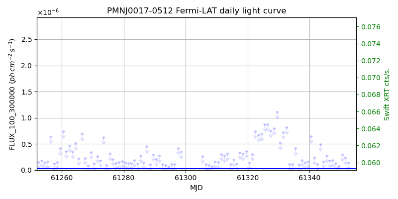
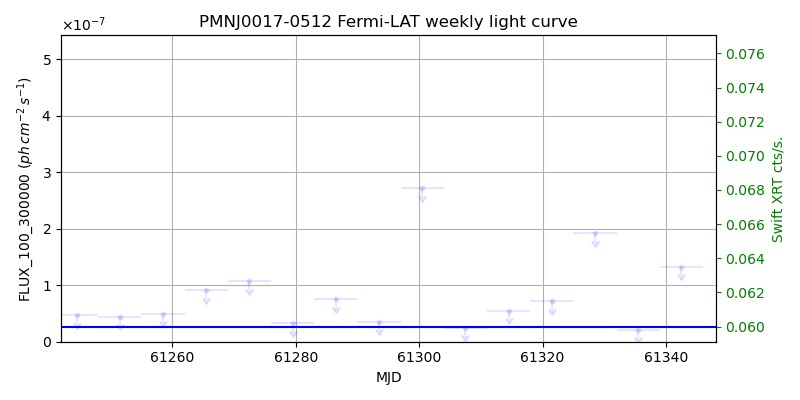
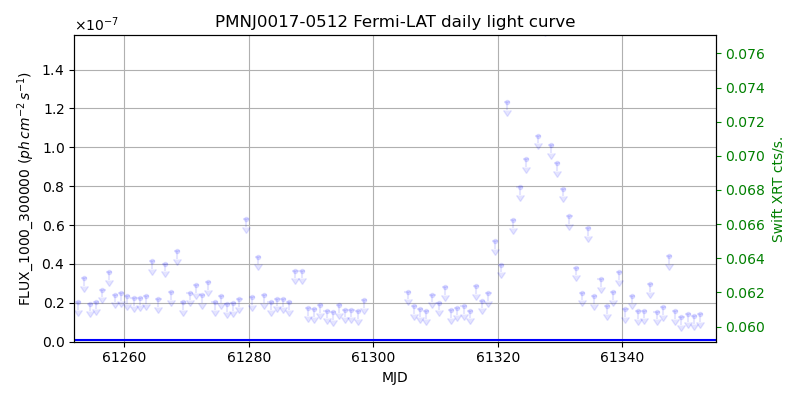
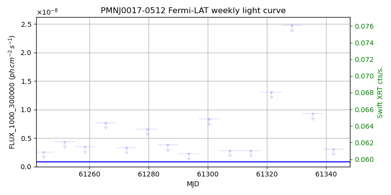

LAT Lightcurve site: https://fermi.gsfc.nasa.gov/ssc/data/access/lat/msl_lc/source/PMN_J0017-0512
Swift site: https://www.swift.psu.edu/monitoring/source.php?source=PMNJ0017-0512
NED: Query
Time of last update of this page: UT: 2026-11-13 16:11 (MJD: 61357.674)
| Property | Value |
|---|---|
| R.A. | 0:17:35.76 |
| Dec. | -5:12:43.2 |
| z | 0.227 |
| 3FGL SpectrumType | PowerLaw |
| 3FGL PL Index | 2.51 |
| 3FGL Flux_100_300000 | 2.55e-08 1 / (s cm2) |
| 3FGL Flux_1000_300000 | 7.96e-10 1 / (s cm2) |
| 3FGL Flux >200 GeV | 2.72e-13 1 / (s cm2) |
| 3FGL Extrap. Crab >200 GeV | 0.00 |
| 3FGL Flux After EBL Absorption >200GeV | 1.27e-13 1 / (s cm2) |
| 3FGL EBL Crab Fraction >200GeV | 0.00 |

| MJD | dMJD | Flux | dFlux | Frac3FGL | FracCrab>200GeV | EBLFracCrab>200GeV |
|---|---|---|---|---|---|---|
| 61348.50 | 0.50 | 1.34e-07 | 0.00e+00 | 0.00 | 0.00 | 0.00 |
| 61349.50 | 0.50 | 7.27e-08 | 0.00e+00 | 0.00 | 0.00 | 0.00 |
| 61350.50 | 0.50 | 2.94e-07 | 0.00e+00 | 0.00 | 0.00 | 0.00 |
| 61351.50 | 0.50 | 2.35e-07 | 0.00e+00 | 0.00 | 0.00 | 0.00 |
| 61352.50 | 0.50 | 1.39e-07 | 0.00e+00 | 0.00 | 0.00 | 0.00 |

| MJD | dMJD | Flux | dFlux | Frac3FGL | FracCrab>200GeV | EBLFracCrab>200GeV |
|---|---|---|---|---|---|---|
| 61321.50 | 3.50 | 7.19e-08 | 0.00e+00 | 0.00 | 0.00 | 0.00 |
| 61328.50 | 3.50 | 1.92e-07 | 0.00e+00 | 0.00 | 0.00 | 0.00 |
| 61335.50 | 3.50 | 2.11e-08 | 0.00e+00 | 0.00 | 0.00 | 0.00 |
| 61342.50 | 3.50 | 1.33e-07 | 0.00e+00 | 0.00 | 0.00 | 0.00 |
| 61349.50 | 3.50 | 6.28e-08 | 0.00e+00 | 0.00 | 0.00 | 0.00 |

| MJD | dMJD | Flux | dFlux | Frac3FGL | FracCrab>200GeV | EBLFracCrab>200GeV |
|---|---|---|---|---|---|---|
| 61348.50 | 0.50 | 1.58e-08 | 0.00e+00 | 0.00 | 0.00 | 0.00 |
| 61349.50 | 0.50 | 1.27e-08 | 0.00e+00 | 0.00 | 0.00 | 0.00 |
| 61350.50 | 0.50 | 1.41e-08 | 0.00e+00 | 0.00 | 0.00 | 0.00 |
| 61351.50 | 0.50 | 1.30e-08 | 0.00e+00 | 0.00 | 0.00 | 0.00 |
| 61352.50 | 0.50 | 1.42e-08 | 0.00e+00 | 0.00 | 0.00 | 0.00 |

| MJD | dMJD | Flux | dFlux | Frac3FGL | FracCrab>200GeV | EBLFracCrab>200GeV |
|---|---|---|---|---|---|---|
| 61321.50 | 3.50 | 1.31e-08 | 0.00e+00 | 0.00 | 0.00 | 0.00 |
| 61328.50 | 3.50 | 2.47e-08 | 0.00e+00 | 0.00 | 0.00 | 0.00 |
| 61335.50 | 3.50 | 9.29e-09 | 0.00e+00 | 0.00 | 0.00 | 0.00 |
| 61342.50 | 3.50 | 3.09e-09 | 0.00e+00 | 0.00 | 0.00 | 0.00 |
| 61349.50 | 3.50 | 3.08e-09 | 0.00e+00 | 0.00 | 0.00 | 0.00 |
--------------------------------------------------------- Using user-supplied coords: 0:17:35.76 -5:12:43.2 2000 --------------------------------------------------------- FLWO UT night of: 2026-11-14 Local Sid. @ Midnight: 03:09 Sunset (-15.0) (local, UT): 18:35 01:35 Sunrise (-15.0) (local, UT): 05:42 12:42 Moonrise (local, UT): Moonset (local, UT): 20:50 03:50 Moon phase: 0.22 --------------------------------------------------------- AzTime LSID UT Obj_el Obj_az Mn_el Mn_az Sep. --------------------------------------------------------- 18:35 21:44 01:35 38.0 127.8 20.1 218.2 78.2 19:05 22:14 02:05 42.8 135.3 16.0 223.7 78.0 19:35 22:44 02:35 46.9 144.1 11.6 228.6 77.9 20:05 23:14 03:05 50.2 154.3 6.9 233.2 77.7 20:35 23:44 03:35 52.4 165.8 2.0 237.3 77.5 21:05 00:14 04:05 53.3 178.1 -2.2 241.2 77.2 21:35 00:44 04:35 52.8 190.5 -9.0 244.8 77.0 22:05 01:14 05:05 51.0 202.3 -14.6 248.2 76.8 22:35 01:44 05:35 48.0 212.9 -20.4 251.4 76.5 23:05 02:14 06:05 44.1 222.1 -26.2 254.5 76.3 23:35 02:44 06:35 39.5 230.1 -32.1 257.5 76.0 00:05 03:14 07:05 34.3 236.9 -38.1 260.6 75.7 00:35 03:45 07:35 28.8 242.8 -44.2 263.8 75.4 01:05 04:15 08:05 23.0 248.0 -50.2 267.1 75.1 01:35 04:45 08:35 17.0 252.8 -56.3 270.9 74.8 02:05 05:15 09:05 10.8 257.1 -62.4 275.3 74.5 02:35 05:45 09:35 4.6 261.3 -68.4 281.1 74.1 03:05 06:15 10:05 -1.0 265.2 -74.2 289.9 73.8 03:35 06:45 10:35 -8.3 269.2 -79.6 306.2 73.5 04:05 07:15 11:05 -14.7 273.1 -83.2 343.5 73.1 04:35 07:45 11:35 -21.1 277.3 -82.1 35.1 72.8 05:05 08:15 12:05 -27.4 281.7 -77.4 61.2 72.5 05:35 08:45 12:35 -33.6 286.6 -71.8 73.4 72.1 05:42 08:52 12:42 -34.9 287.7 -70.5 75.2 72.1 --------------------------------------------------------- Source never above horizon of 55.0 deg. Dark hours >55 deg.: 0.00